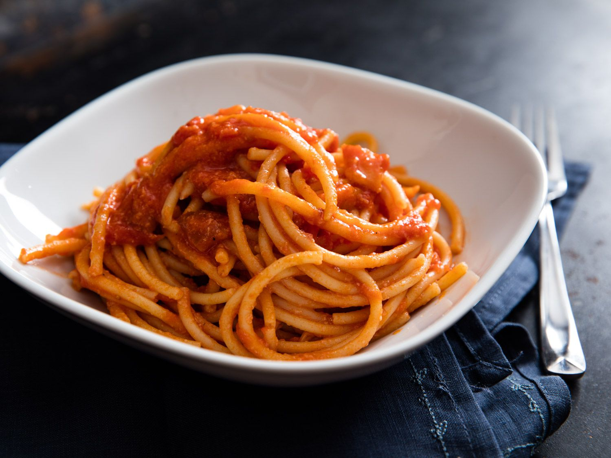

Spaghetti Recipe

How to make Spaghetti
In order to make Spaghetti, will need a type of noodles, a pot, water and a couple of minutes.
Ingredients
- A pack of pasta
- Marinara sauce
- boiling water
- olive oil
- pot
- measuring cup
Steps to make
- Add a couple cups of water to a pot and start heating it in the stove until boil
- Add olive oil to the pot so the pasta does not stick
- After a couple of min make sure you stir the pasta as it begins to become stringy for it to not stick.
- Once its been a couple of min. Drain the water from the pasta leave a little bit though
- Then you mix in the marianar sauce and stir leave it a little low heat until ready to eat.
Click to go back to main page